3. docx批量转rst方法
3.1. 按章分割word文档
1.将所需转换的文档放入一个新的文件夹中
2.打开文档，进入大纲视图
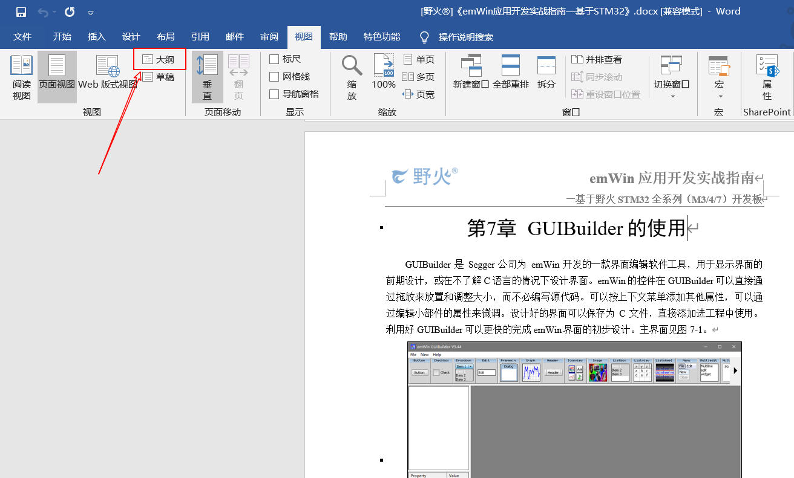3.合理选择显示级别，取消显示文本格式的选项后将显示本文档所有的章节名
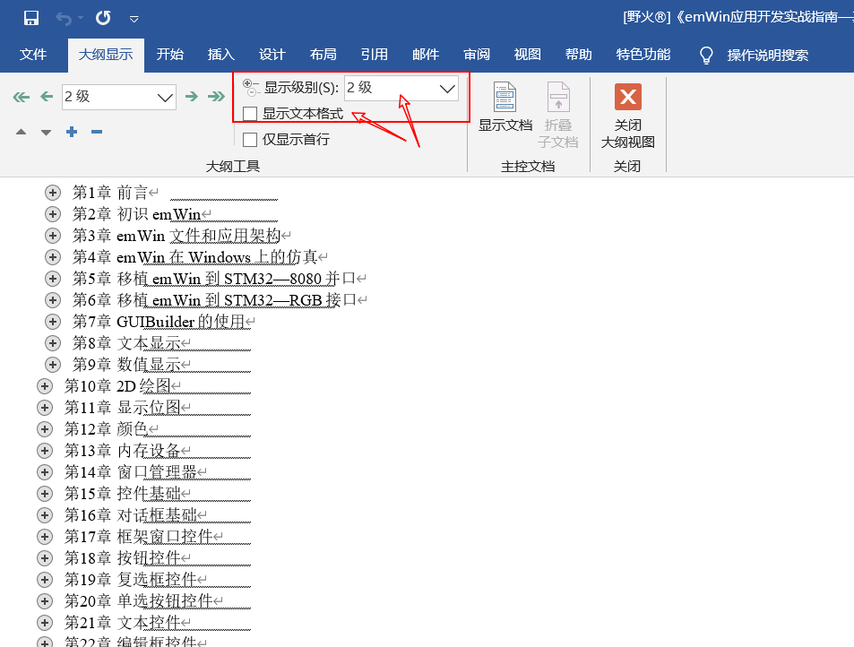4.点击第n章前的加号按钮，选中本章，点击显示文档按钮，出现创建选项
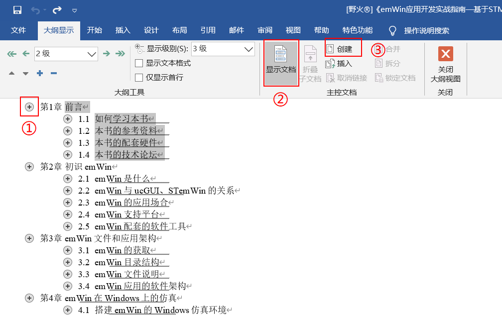5.点击创建按钮之后如图所示
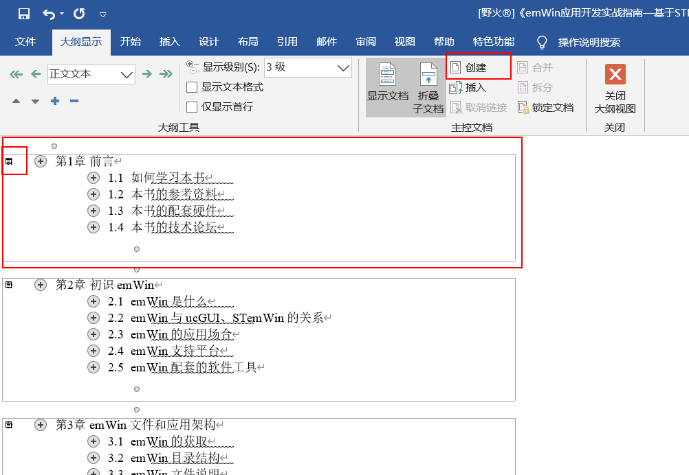6.所有章都按上述方法操作，点击保存
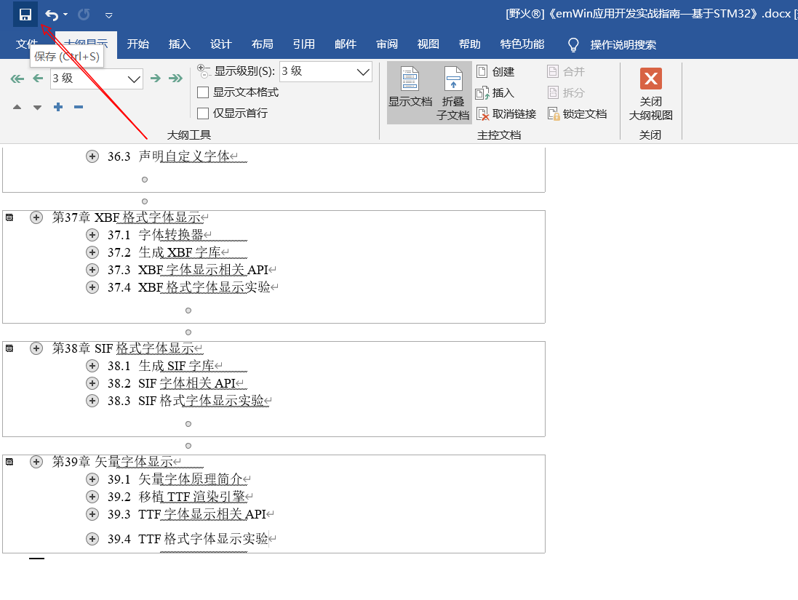7.文件夹中就出现了分割好的单独docx格式的文件，删除原来整本的文档
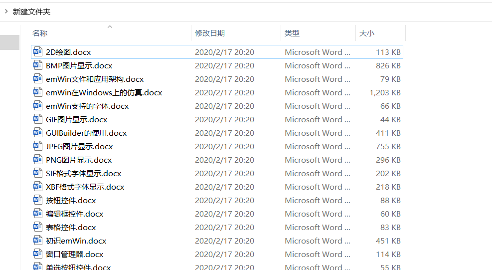3.2. 批量将分割后的docx转换为rst
1.将分割后的文件改成对应的英文名以方便转换
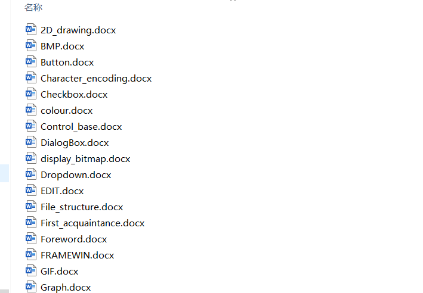2.新建一个文本文档，内容如下，获取当前列表中的文件名
DIR *.* /B >LIST.TXT
3.将新建文本文档的后缀名改为 .bat后双击运行得到 了LIST.TXT ，
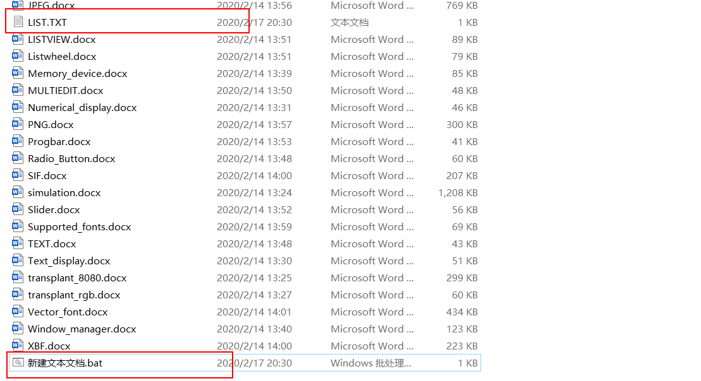4.用notepad++打开LIST.TXT,删除图中的两行
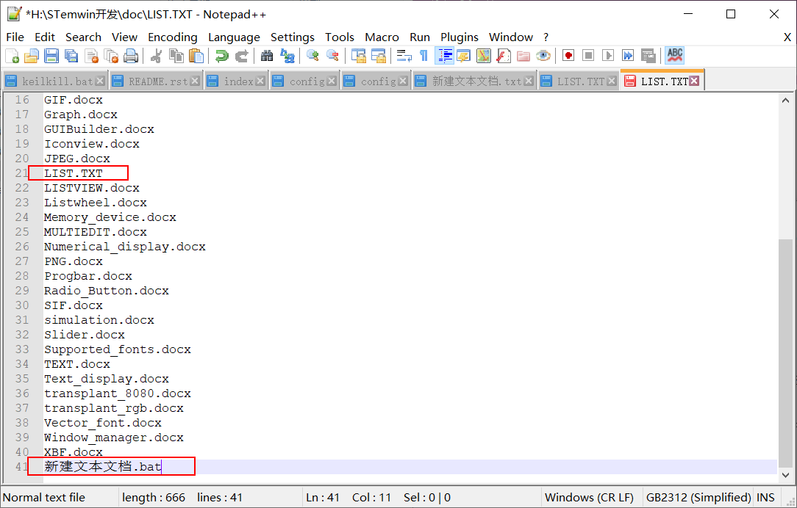5.鼠标：alt+鼠标左键选择中所有的行。键盘：alt+shift+方向鍵将位置调整到行首。输入rstfromdocx -lurg 后保存。
rstfromdocx -lurg
6.在文档所在的文件夹按住shift键和点击鼠标右键，选中打开powershell，
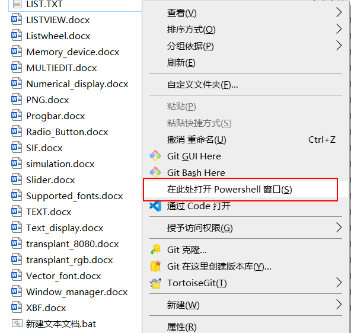7.全选上面编辑好的文档列表然后复制到powershell中，鼠标右键复制，文档开始转换
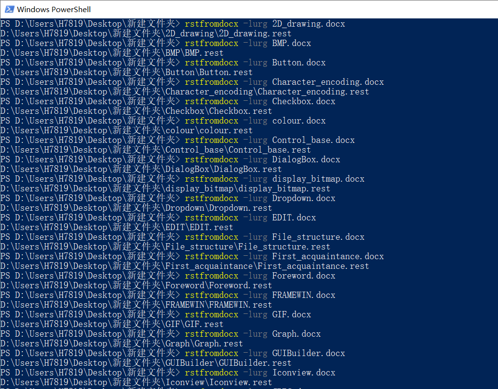8.完成后就得到了转换好的文件，将转换好的文件复制到一个新文件夹中，防止接下来的操作失败，注意备份
3.3. 批量将.rest修改为.rst并删除不需要的文件
1.在新文件夹中新建一个.bat文件，并复制以下内容保存后运行
del *.py /s
del index.rest /s
del Makefile /s
for /f "tokens=* delims=" %%i in ('dir /b /a-d /s "*.rest"') do (move "%%i" "%%~dpi./../")
for /f "tokens=* delims=" %%i in ('dir /b /a-d /s "*.png"') do (move "%%i" "%%~dpi./../")
for /f "tokens=* delims=" %%i in ('dir /b /a-d /s "*.jpeg"') do (move "%%i" "%%~dpi./../")
for /f "tokens=* delims=" %%i in ('dir /b /a-d /s "*.jpg"') do (move "%%i" "%%~dpi./../")
for /f "tokens=* delims=" %%i in ('dir /b /a-d /s "*.bmp"') do (move "%%i" "%%~dpi./../")
echo.
echo 正在删除当前目录及子目录中所有的空文件夹，请稍后......
echo -------------------------------------------------------------
cd. > listnull.txt
for /f "delims=" %%i in ('dir /ad /b /s') do (
dir /b "%%i" | findstr .>nul || echo %%i >> listnull.txt
)
set /a sum=0
for /f "tokens=*" %%i in (listnull.txt) do (
rd /q "%%i"
echo 成功删除空目录：%%i
set /a sum=sum+1
)
echo -------------------------------------------------------------
echo 共成功删除%cd%目录及其子目录下%sum%个空文件夹！
echo.
set sum=
ren *.rest *.rst
del listnull.txt
exit
上述代码的作用是删除不需要的文件和空文件夹，并将图片文件移动到上一级目录下，然后将rest更名为rst
2.新建一个media文件夹，并将存放图片的文件夹移动至media文件夹，至此，批量转换完成
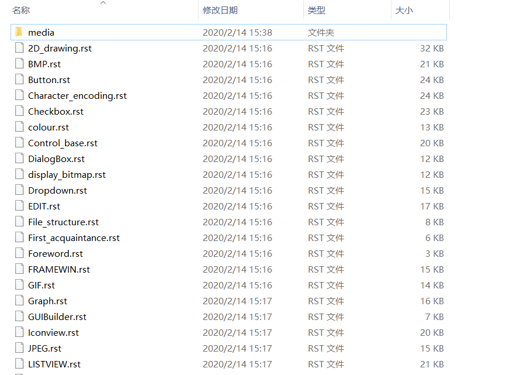